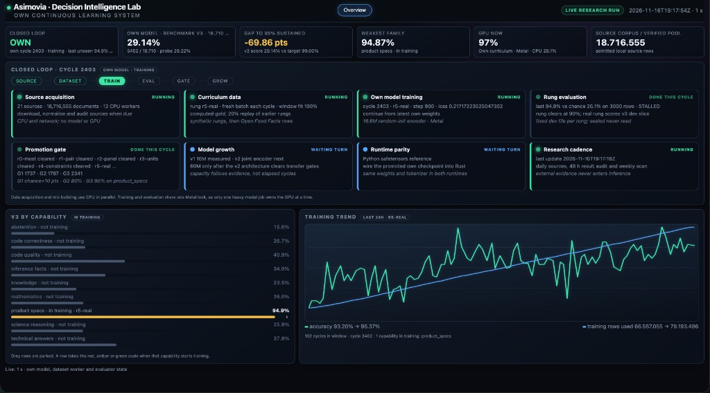

Two jobs ran at the same time. One built the next batch of decisions on the CPU. The other trained on the batch that was already ready, on the GPU. A local console put both on one screen. This page is one frame from the last afternoon of training, and how to read it.
The data job does not need the GPU, so it stays ahead of training. The learning job owns the GPU alone: a cycle trains, then sits the fixed exam, and the next cycle waits until that exam has been written down. The console refreshes about once a second from files on disk. It does not train, and it does not write labels.
16 November 2026, 19:17 UTC, cycle 2403 of 2,404. Training was on the real rung. The cycle's
exam landed in docs/data/history.jsonl at 19:31 UTC: 94.8% on the 3,000-row
benchmark. The left cards are the data job (source acquisition, curriculum data). The training
card and the rung-evaluation card are the learning job. The chart is the last 24 hours of that
rung.

The console watched a wider lab than this repository. Most capabilities on the list were parked, marked "not training". Only product specs, the nutrition task, was in the loop. The headline mixes those parked rows in. The nutrition number that afternoon is the family row, and the published number in the README is a later measurement of the champion.
| On the console | What it is |
|---|---|
| Closed loop, 29.14% | A single figure across every capability on the board, including the ones that were not in training. |
| Weakest family, 94.87%, product specs | The nutrition task, the only family training that day. The logged exam for cycle 2403 is 94.8% on 3,000 rows. |
| Gap, minus 69.86 points | How far a separate wide benchmark, about 26%, sat from a 94% bar set for that wider board. |
| Source corpus, 18,716,555 | Local source rows admitted by the wider lab. The nutrition training set is 77,094 episodes. |
| GPU 97%, CPU 29% | The cycle owned the Metal GPU. The data job was the quieter CPU load beside it. |
| Trend, 93.20% to 95.37% | The last 24 hours of the real rung, 102 cycles. The second line counts rows fed in that window, reuse included, so it is not a count of distinct products. The full curve is the chart in the README. |
The published accuracy, 96.9%, is a later measurement of the champion, cycle 2394, with the slotted input layout described in the README. The console shows the scores the loop recorded while it was running. Cycle 2394's logged exam is 95.4%, written at 17:04 UTC the same day.
It did not choose the champion. That choice is the best logged exam on the real rung, and the
published weights are that checkpoint. It did not label rows: every label comes from the
builder. The sealed cut never appears here, because the builder never writes it. And this
screen is a record of the run, not a service this repository starts. Trying the published model
is the examples page, python -m serve.server.
Code: Apache-2.0. The photograph is a frame of the local research console from 16 November 2026.